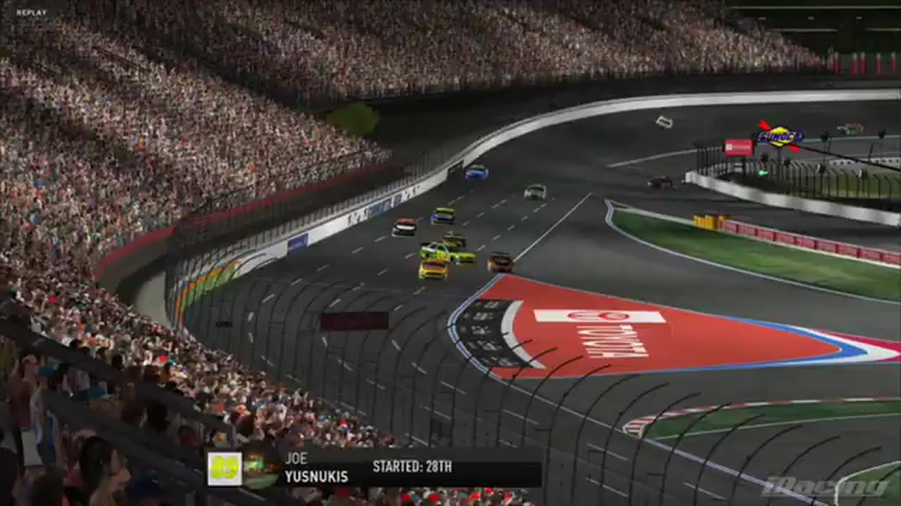

Joseph Yusnukas
Team assignment not stated in the structured owner record.
1 RECOVERED WIN / EVERY ONE RECEIPTED
- Official files
- 2
- Central editions
- 1
- Exact tape cues
- 1
- Accepted podiums
- 1
Joseph Yusnukas's accepted HLRN result file contains 1 supported feature win and 1 recovered podium: S1 R3 at Charlotte (P1). A consistently stated team affiliation remains open for owner review. The currently indexed source window runs from December 1, 2025 through December 8, 2025.
The searchable official-broadcast footprint covers 2 race files. 1 Highline Central edition and 1 primary-race jump point connect the result ledger back to the tape. The densest direct-tape categories are result (1 cue). Those counts describe where the name is easiest to find; they are not fault, pace, or performance grades. A source-attributed car frame is published with its original video and timestamp. That is the current discovery map for Joseph Yusnukas.
No unsupported start total, full points total, car number, or finishing position is added around those receipts. The dossier grows from accepted results and source appearances, not from broadcast-name volume. No Highline Live bonus file is currently attached to this identity. The displayed name is labeled transcript normalized; that status remains visible so an owner roster can strengthen or correct the identity without rewriting the evidence trail. Those boundaries define Joseph Yusnukas's public HLRN file.
1 featured race-tape cues
These are discovery routes into complete HLRN broadcasts, not performance grades or inferred results.
Recent editions connected to Joseph Yusnukas
Verified team history is not consistently stated. Complete starts, finishes, and points remain open beyond the recovered results. Name normalization remains reviewable against owner records.